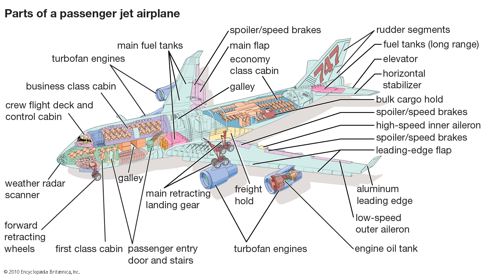

INTRODUCTION
Since the beginning of time, mankind has always had a variety of ambitions in order to achieve completion in his character. These very dreams led man to acknowledge that he required skill in order to achieve them. Amongst those dreams is achieveing the ability to fly and navigate the globe by means of air. His sheer will-power together with his increasing intelligence led him to make an invention that would help him achieve this, that being the "Plane". This invention ended up being versatile in usage and thus became a huge blessing for man.
About
This is a website containing a lot of information about aeroplanes. The main reason why this website was made is to provide information to users who are interested in planes. Part of this information includes the history of planes, their functionality and various ways in which one can access the planes and get a GOLDEN opportunity to use them.
THE HISTORY OF AEROPLANES
The earliest concept of a plane actually dates back to 1490 rather than the well acknowledged year of 1905. Back then, Leonardo da Vinci> made a piece of art depicting his plan on a 'one-seater' machine that would be used to fly from place to place, that being, the Leonardo da Vinci flying machine.
Centuries later,on the evening of September 18,1901 ,Wilbur Wright addressed a respected group of Chicago engineers on 'some aeronautical experiments' that he and his brother, Orville Wright did over the past 2 years. He realised that from the experiments,there were challenges that thus needed to be conquered.
Later in 1905, the Wright brothers> successfully tackled the 'prototype plane''s problems and made the Wright Flyer, the VERY FIRST PLANE !

Since then, more research into aerodynamics has led to the evolution of modern planes. For example, in 1853, George Cayley's glider was invented. Afterwards the Lilienthal glider was made in the 1870s, the Langley aerodome in 1903 and many more inventions that led to the modern plane that we have today. (Most of this information has been derived from Brittanica)
Parts of a plane
The following image will help you identify various parts of a plane: 
In order to get even more information about planes, go to the